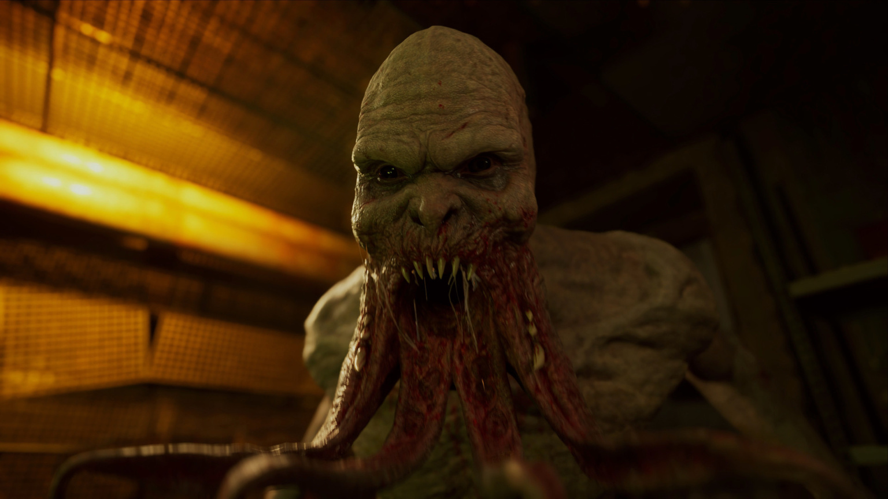
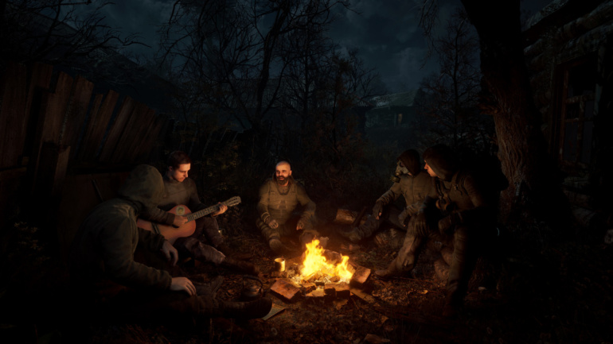

Stalker 2: Heart of Chornobyl вийде в 2023 році та повернеться в магазин Xbox – GSC Game World
GSC Game World, розробник Stalker 2: Heart of Chornobyl, є однією з багатьох студій, котрі серйозно постраждали від вторгнення росії в Україну та війни, що триває. Очікуваний сиквел був запланований до випуску у цьому році, але незабаром після вторгнення був відкладений до 2023 року.
Нещодавно магазин Xbox почав повертати вартість зроблених попередніх замовлень на гру з повідомленням, що її вихід відкладений на невизначений час. Припинено також прийом нових замовлень. За цим стоїть виключно політика Microsoft щодо відшкодування коштів – так чинять з будь-якою грою без точної дати виходу. У GSC прокоментували ситуацію:
«Нам довелося перенести гру на 2023 рік, точної дати виходу поки що немає», — пише представник компанії. «Ми зробили оголошення на виставці E3 Microsoft Extended разом із щоденником розробників та вступним роликом. Microsoft відшкодовує кошти за замовлення на ігри без точної дати випуску. Коли пізніше ми оголосимо дату, попереднє замовлення знову буде доступне для Xbox. Це не стосується попереднього замовлення на ПК (Steam, EGS, GOG).
Наслідки війни для GSC Game World були справді жахливими. У червні студія поділилася відео, яке розповідає про події, що відбулися з розробниками в перші місяці війни. У ньому показано залишки того, що колись було київським офісом GSC, співробітники діляться особистими історіями, провідні розробники обговорюють можливість вступу до ЗСУ. Компанія все ще перебуває в процесі переносу власної ддіяльності у Прагу. У Steam у якості дати виходу Stalker 2 зазначено грудень 2023 року.